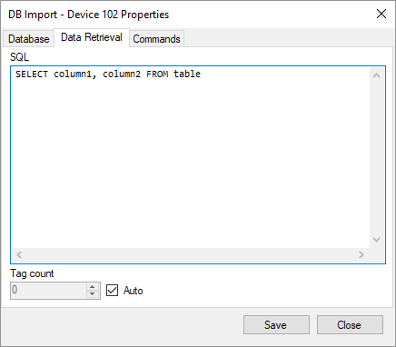
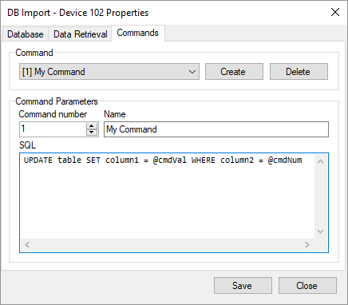

The database import driver is designed to receive current data from a third-party database, as well as write information to a third-party database using telecontrol commands. This driver is included in the Rapid SCADA installation package and does not require separate installation. The driver library file is KpDbImport.dll.
Each device that uses the database import driver contains one request for receiving data and a set of commands for changing data. There can be one or more devices importing data on a one communication line.
Configuring the database import driver is performed using the device properties form. To open this form, find the corresponding device in the Communicator settings, right-click on the device node and choose the Properties menu item.
The Database page allows to specify the database type and the parameters of the database connection. If non-standard connection parameters are needed, it is possbile to edit the connection string directly.

The Data Retrieval page specifies the SQL query to retrieve current data from the database. The driver automatically creates device tags based on the list of requested table columns. If a request has a complex syntax, enter the number of tags manually.

The telecontrol commands supported by the device are defined on the Commands page. Commands provide information transfer from Rapid SCADA to the database. SQL query of a command may include the variables cmdVal and cmdNum which contain the value and number of the command. For most DBMS variables in the query need the prefix @, whereas : (colon) is usually used for Oracle.
A command having the number 0 is a default command. If the number of the command sent is not found in the list of the device commands, the default command is executed.